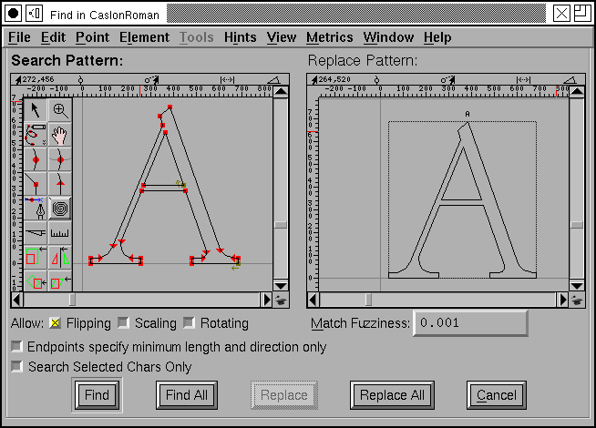

 グリフの中から図形を探す方法
FontForge では、特定の図形を含むすべてのグリフを検索し、希望した場合はその図形を他の形に置き換えることができます。
図形がある種の変換 (回転、拡大・縮小、反転など) を受けていてもマッチするかどうかを指定することができます。
FontForge は、通常は、フォント内の全グリフを検索しますが、検索範囲を選択された文字のみに限定することができます。
検索タブと置換タブはアウトライングリフビューと非常によく似たふるまいをし、そこではアウトラインビューで使用可能なツールを使って描画ができます。 ウィンドウの最上部にあるメニューはアウトライングリフビューのメニューのサブセットです。2 つのペインのうち、同時に編集できるのは 1 つのみで、編集中の方でしかメニューは動作しません。タブをクリックするか、[Tab] キーを押すことにより、そちら側編集できるようになります。
[検索] ボタンはフォントの先頭から順に、検索パターンを含むグリフを検索し、一致した最初のグリフを含むアウトライングリフビューを開きます。いちど [検索] ボタンを使用した後は、[次を検索] ボタンを押すと、最後に一致した文字から次の文字を検索して、同じウィンドウ内に同じ表示法で表示します。
[すべて検索] ボタンは、そのパターンを含むすべてのグリフを選択します。
[置換] ボタンは、[検索]/[次を検索] の後か、既に [置換] を使用しているときにのみ動作します。見つかった物を置き換えパターンで置換してから、もう一度 [次を検索] を押したのと同じ動作をします。
[すべて置換] ボタンは、検索パターンに一致するすべての輪郭を置き換えパターンに置換してから、一致したすべてのグリフを選択します。
検索には 2 つの異なる種類があり、パターンに含まれる図形によって行われる検索は異なります。検索パターンが 1 個の開いたパスで (かつ、置き換えパターンも同じで) あるならば、検索パターンがパス内のどの部分に含まれていても一致するものとされます。一方、検索パターンが閉じたパスまたは複数のパスを含んでいる場合は、完全に一致するパスのみが検索されます。すなわち、検索パターン内のそれぞれのパスに対して、それと正確に一致するパスがグリフに含まれていなければなりません。
現時点では、置換機能に対して私は 2 種類の考え得る使用法があると思います:
- フォント内のセリフのスタイルを変更する (下の例をご覧ください)
- FontForge は、OpenType (および一部の Type1) フォントの読み込み時に、参照を含むべきグリフを常に検索できるわけではありません。"A" の形をしたものをすべて A への参照に置き換えるという類のすべての作業を行うために、置き換え機能を使うことができます。